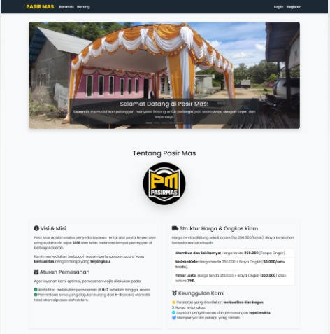

Featured Projects

Web Bisnis
Sistem Penyewaan Perlengkapan Acara
Aplikasi manajemen rental untuk inventaris dan pelacakan booking (Sewa perlengkapan).
View Demo
Web Bisnis
Sistem Penjualan & Distribusi Air Minum
Sistem manajemen agen penjualan dengan rute optimasi dan pelacakan pelanggan.
View Demo
Studi Kasus Akademik
Sistem Pakar Diagnosis Stunting
Aplikasi implementasi sistem pakar (Expert System) dengan algoritma diagnosa penentu gizi.
View Demo